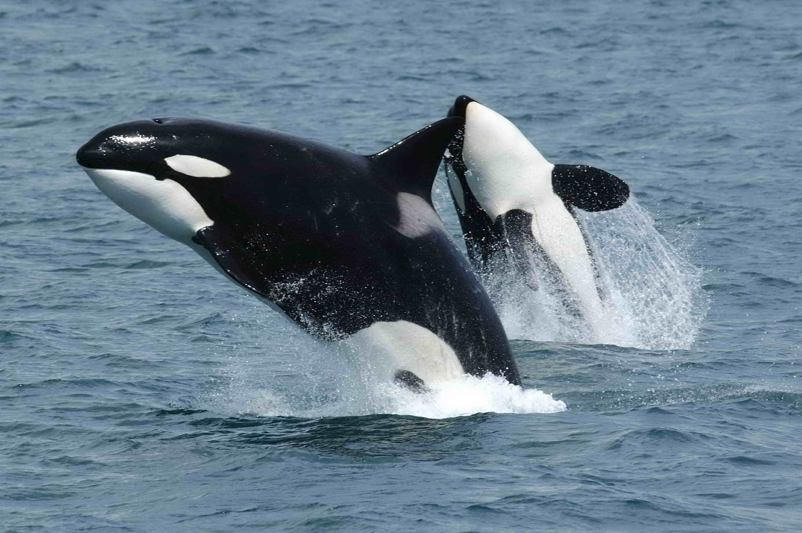

ORCA
Orcinus orca

Su patrón de contrasombreado y sus manchas blancas ayudan a ocultar y romper el contorno de su silueta mientras caza.
- Nombre científico: Orcinus orca
- Camuflaje: El lomo negro se confunde con el fondo marino visto desde arriba y el vientre blanco con la superficie iluminada visto desde abajo; las manchas oculares y el parche gris tras la aleta dorsal rompen el contorno de la silueta.
- Hábitat: Océanos de todo el mundo, con mayores concentraciones en las regiones polares como el Ártico y la Antártida.
- Sentido: Visión.
- Uso: Caza.
- Función: Obtener alimento y ocultarse.